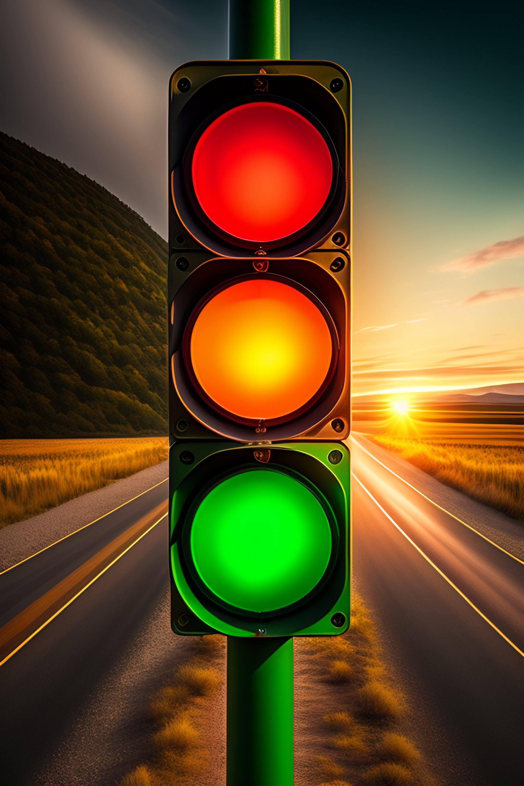
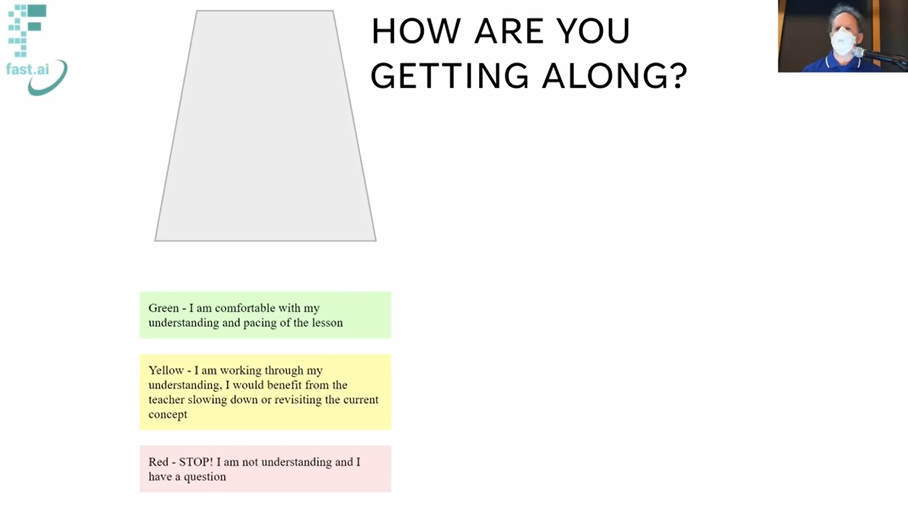

Introduction
I have had my share in teaching high school students a few years ago and one of the challenges that I faced back then was of getting a real time feedback of my student’s learning, as I was teaching in the class. Since I could not (and can not now as well) read their minds to know if they are following well along, I had to rely on them. They had to let me know if they are following along well. That brings another challenge! A student first must be self aware of his/her learning. In order to enable this, the students must be made owners of their learning.
Colored Cups
Colored Cups introduced by Dylan Wiliam in his book Embedded Formative Assessment (2011), is an effective technique that can be used in a classroom that attempts to:
- Get real-time feedback of student’s learning for teachers.
- Promotes self-regulated learning for students.
Working
The idea is simple!
All the students in the classrooms have 3 colored cups, a green cup, a yellow cup, and a red cup which are stacked together at the beginning of the class.
Each of these colors reflect the various levels of understanding. Green means the student is understanding well, yellow means s/he is not quite sure what is going on, and red means the student has no idea of what is going on.
As the lesson is being taught, the students put a colored cup on their desks that corresponds to how they are following along, and the teacher can see the classroom to get a sense of how the students are following along.
Prior to when a student puts a colored cup on the desk, s/he must self-assess his learning.
Adaptations In The fast.ai Course
I first got to know about this in Practical Deep Learning for Coders course. In the course, a virtual setup was made and the teacher, Jeremy could see it from his end in the teacher version.
